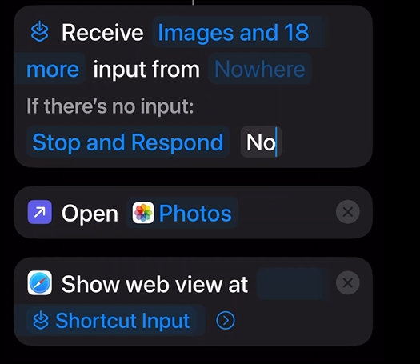
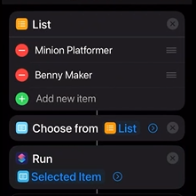
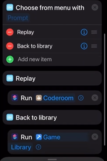

Play Scratch games Offline on iphone - by @yiosgio
Wait a minute... Play scratch games offline on your iphone? How do you do that? Let me explain how to do this step-by-step Using Apple's Shortcut app.
First, Create a shortcut, Name it game Load. We'll add one more function later, so then follow this image.

Now create another shortcut, And this is my first game, Minion Platformer but choose yours. Reuse when adding new games
Now that you have the basics. you need a game library. So create another shortcut and name it "Game Library". Add the scripts below. The List part can be customized. Choose your games. Exact caplization.

Now go back to your Game Load shortcut and add this, Coderoom is supposed to be Game Load. Game Load argument should have "Shortcut input" game library doesnt need any.

Now that you're done all that's left is to share this to your friends. This will work offline
Try making a widget, and put the shortcut "Game Library", You can also put a shortcut on your control center.
Just keep in mind where you get scratch html files is through turbowarp packager. Choose Plain HTML option.